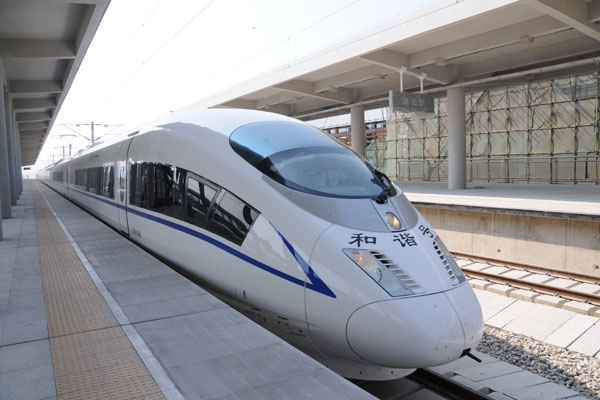

潮州经济
潮州的经济状况不是特别好，她仍在不停进步。
潮州经济不算发达
潮州的工业较为完整，陶瓷、不锈钢、食品加工产业规模大，但以中小企业甚至家庭作坊为主，缺少大型企业。这导致污染严重，政府税收少，基础建设落后。这就导致了潮州教育落后，医疗水平落后，人才缺乏。
由于经济落后，圈子封闭，潮州的商业也没有得到很好的发展。
潮州地区的年轻人外出之后便不愿意回来，在潮州勉强可以算是大企业的也只有三环、松发之类的企业。
潮州明天会更好
潮州要想发展得更好，需要有政府的支持。只有将潮州的基础设施弄好了，潮州才有更好发展的可能。
近年来潮州也在不断地变好，从高铁站、高速公路到各种各样的商场、各村各乡的公路，潮州的基建变得越来越好。